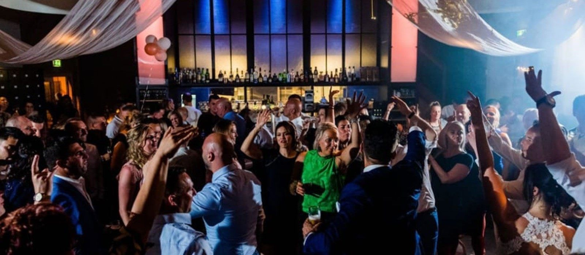

Bedrijfsfeesten
Bent u op zoek naar ideeën of een geschikte locatie voor uw bedrijfsfeest of personeelsfeest in de regio Roosendaal of Breda? Wij nemen organisatorisch alles uit handen en garanderen een onvergetelijk feest, walking dinner of een gezellige borrel op een historische locatie.
Volledig ontzorgen is ons doel. Van bedrijfsfeest tot themafeest: we hebben al veel unieke bedrijfsfeesten mogen hosten, organiseren en produceren. Een hapje eten én feestavond? Dat kan.
Doe een aanvraag